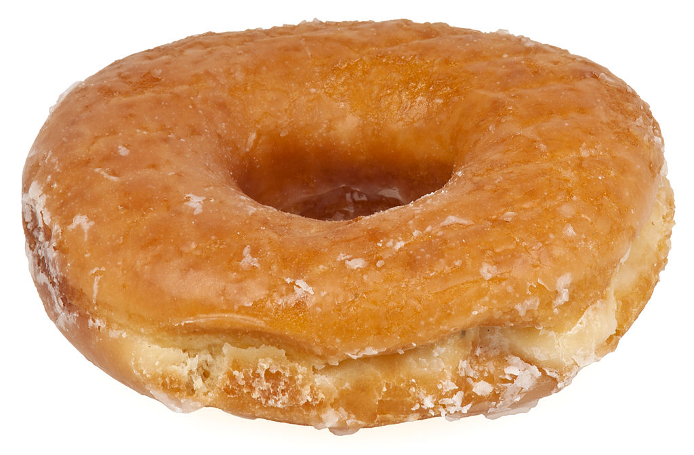

A doughnut or donut (both: /ˈdoʊnət/ or /ˈdoʊnʌt/; see spelling differences) is a type of fried dough confectionery or dessert food. The doughnut is popular in many countries and prepared in various forms as a sweet snack that can be homemade or purchased in bakeries, supermarkets, food stalls, and franchised specialty outlets.
Doughnuts are usually deep-fried from a flour dough, and typically either ring-shaped or without a hole, and often filled. Other types of batters can also be used, and various toppings and flavorings are used for different types, such as sugar, chocolate, or maple glazing. In addition to flour, doughnuts may also include such ingredients as water, leavening, eggs, milk, sugar, oil/shortening, natural flavors and/or artificial flavors.[1][2]

The two most common types are the ring doughnut and the filled doughnut—which is injected with fruit preserves, cream, custard, or other sweet fillings. A small spherical piece of dough may be cooked as a doughnut hole. Once doughnuts have been fried, they may be glazed with a sugar icing, spread with icing or chocolate, or topped with powdered sugar or sprinkles or fruit. Other shapes include rings, balls, and flattened spheres, as well as ear shapes, twists and other forms. Doughnut varieties are also divided into cake and yeast-risen type doughnuts. Donuts are often accompanied by coffee when they are purchased at doughnut shops or fast food restaurants.